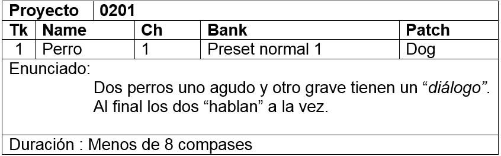
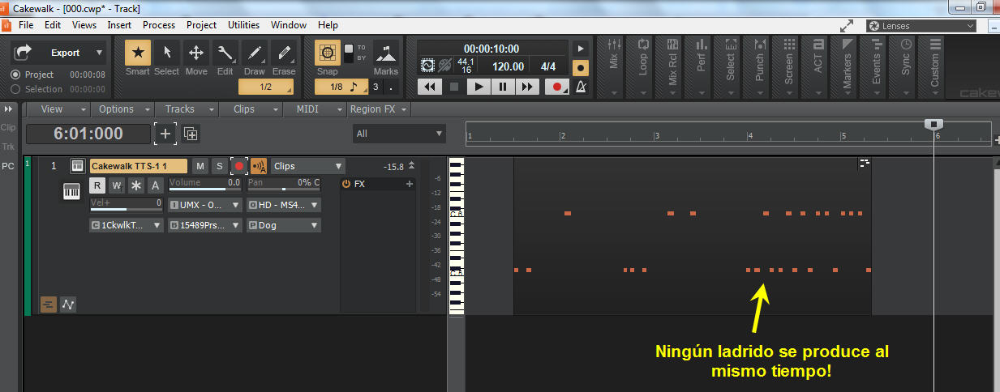

Ejercicio 0201

Ejemplo de solución:
 Idea: Inicia el perro grave y el agudo imita su "ritmo de ladrido", así una vez más. Luego ambos "entonan" un mismo "ritmo".
Idea: Inicia el perro grave y el agudo imita su "ritmo de ladrido", así una vez más. Luego ambos "entonan" un mismo "ritmo".
Comentario y sugerencia:
- Date cuenta cómo un ejercicio tan sencillo puede mostrar cierta intención, en música muchos compositores desarrollan sus ideas basadas en ideas similares.
- En otras ocasiones un compositor suele improvisar libremente y luego analiza lo que ha hecho y edita para dar a entender cierto orden. A veces dejarlo tal cual hace que nuestro oido se acostumbre y por sí mismo le damos un sentido.
- No escatimes en experimentar, dejar las cosas tal cual, analizar, reordenar, crear distintas versiones... eso acostumbrará a tu mente a no dar nada por sentado.
- Por ejemplo, cómo desarrollarías estas ideas:
- Los perros dialogan y nadie imita al otro.
- Cuando ladran juntos lo hacen de tal manera que ni uno ni el otro coincide a la vez